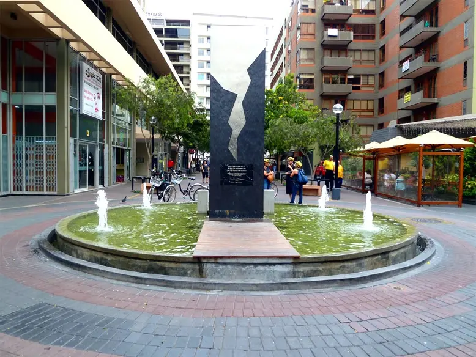

A virtual museum of Lima's urban cinema
Lima Live Cinema Museum
0 locations. 0 films. Nearly a century of urban cinema.
Lima has been a film set for as long as it has been a modern city. From the republican squares of the 1930s to the cliff-face malls of the 1990s, from the working-class markets of the internal conflict to the stadiums of centenary celebration — the city's spaces have served as stages for an extraordinarily rich body of cinematic work. This exhibition maps those spaces, traces their histories, and proposes two ways of reading them: as a timeline of the city's cinematic century, and as a single day's journey from the river to the sea.
Visit the city
Follow cinema through Lima
These are not only stories to read: they are routes designed for visitors who want to encounter the real places where Lima's films were made.

01A Walking Tour of Cinematic Miraflores
For the first itinerary, we propose a walking tour through Miraflores, one of Lima’s most recognizable and tourist-oriented districts.
View itineraryResidential and Cinematic San Isidro
The second itinerary takes place in San Isidro, one of Lima’s most representative residential, historical, and financial districts.
View itineraryFrom Jorge Chávez Airport to Cinematic Callao
From modernisation and neighbourhood memory to maritime Callao.
View itineraryExplore the collection
Movie locations across Lima
Select a district, move across the map and open a location to discover its films and urban history.